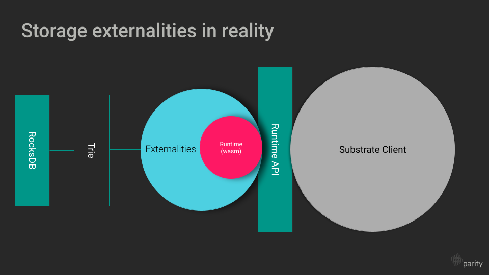
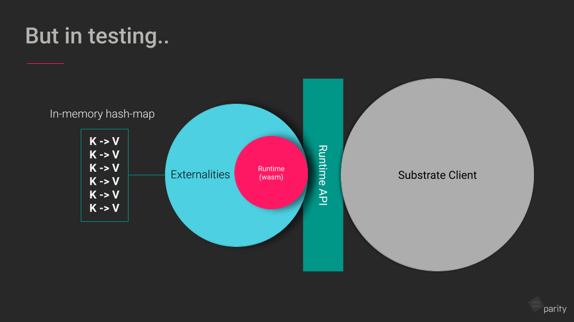

Try runtime
The try-runtime tool is built to query a snapshot of runtime storage, using an in-memory-externalities to store state.
In this way, it enables runtime engineers to write tests for a specified runtime state, for testing against real chain state before going to production.
It is designed to be used as a command line interface to specify at which block to query state.
In its simplest form, try-runtime is a tool that enables:
- Connecting to a remote node and calling into some runtime API.
- Scraping the specified state from a node at a given block.
- Writing tests for that data.
Motivation
The initial motivation for try-runtime came from the need to test runtime changes against state from a real
chain. Prior TestExternalities and BasicExternalities existed
for writing unit and integrated tests with mock data, but lacked an avenue to test against a chain's actual
state. try-runtime extends TestExternalities and
BasicExternalities by scraping state (which is stored with key value pairs) via a
node's RPC endpoints getStorage and getKeysPaged and inserting them
into TestExternalities.
How it works
The try-runtime tool has its own implementation of externalities called remote_externalities
which is just a builder wrapper around TestExternalities that uses a generic key-value store
where data is SCALE encoded.
The diagram below illustrates the way externalities sits outside a compiled runtime as a means to capture the storage of that runtime.
Storage externalities

Testing with externalities

With remote_externalities, developers can capture some chain state and run tests on it. Essentially, RemoteExternalities
will populate a TestExternalities with a real chain's data.
In order to query state, try-runtime makes use of Substrate's RPCs, namely StateApi. In particular:
storage: A method which returns a storage value under the given key.storage_key_paged: A method which returns the keys with prefix with pagination support.
Usage
The most common use case for try-runtime is with storage migrations and runtime upgrades.
There are a number of flags that need to be preferably set on a running node in order to work well with try-runtime’s expensive RPC queries, namely:
set --rpc-max-payload 1000to ensure large RPC queries can work.set --rpc-cors allto ensure ws connections can come through.
Calling into hooks from OnRuntimeUpgrade
By default, there are two ways of defining a runtime upgrade in the runtime. The OnRuntimeUpgrade trait provides the
different methods to achieve this.
- From inside a runtime. For example:
rust
struct Custom;
impl OnRuntimeUpgrade for Custom {
fn on_runtime_upgrade() -> Weight {
// -- snip --
}
}
- From inside a pallet. For example:
rust #[pallet::hooks] impl<T: Config> Hooks<BlockNumberFor<T>> for Pallet<T> { fn on_runtime_upgrade() -> Weight { // -- snip -- } }
These hooks will specify what should happen upon a runtime upgrade. For testing purposes, we prefer having hooks that allow us to inspect the state before and after a runtime upgrade as well.
These hooks are not available by default, and are only available under a specific feature flag, named
try-runtime.
The new hooks are as follows:
#[cfg(feature = "try-runtime")]
fn pre_upgrade() -> Result<(), &'static str> { Ok(()) }
#[cfg(feature = "try-runtime")]
fn post_upgrade() -> Result<(), &'static str> { Ok(()) }
Helper functions
OnRuntimeUpgradeHelpersExt are a set of helper functions made available from
frame_support::hooks in order to use try-runtime for testing storage migrations.
These include:
storage_key: Generates a storage key unique to this runtime upgrade. This can be used to communicate data from pre-upgrade to post-upgrade state and check them.set_temp_storage: Writes some temporary data to a specific storage that can be read (potentially in the post-upgrade hook).get_temp_storage: Gets temporary storage data written byset_temp_storage.
Using the frame_executive::Executive struct, these helper functions in action would
look like:
pub struct CheckTotalIssuance;
impl OnRuntimeUpgrade for CheckTotalIssuance {
#[cfg(feature = "try-runtime")]
fn post_upgrade() {
// iterate over all accounts, sum their balance and ensure that sum is correct.
}
}
pub struct EnsureAccountsWontDie;
impl OnRuntimeUpgrade for EnsureAccountsWontDie {
#[cfg(feature = "try-runtime")]
fn pre_upgrade() {
let account_count = frame_system::Accounts::<Runtime>::iter().count();
Self::set_temp_storage(account_count, "account_count");
}
#[cfg(feature = "try-runtime")]
fn post_upgrade() {
// ensure that this migration doesn't kill any account.
let post_migration = frame_system::Accounts::<Runtime>::iter().count();
let pre_migration = Self::get_temp_storage::<u32>("account_count");
ensure!(post_migration == pre_migration, "error ...");
}
}
pub type CheckerMigrations = (EnsureAccountsWontDie, CheckTotalIssuance);
pub type Executive = Executive<_, _, _, _, (CheckerMigrations)>;
CLI interface
To use try-runtime from the command line, run your node with the --features=try-runtime flag.
The possible sub-commands include:
on-runtime-upgrade: Executes "tryRuntime_on_runtime_upgrade" against the given runtime state.offchain-worker: Executes "offchainWorkerApi_offchain_worker" against the given runtime state.execute-block: Executes "core_execute_block" using the given block and the runtime state of the parent block.follow-chain: Follows a given chain's finalized blocks and applies to all its extrinsics. This allows the behavior of a new runtime to be inspected over a long period of time, with real transactions coming as input.
For example, running try-runtime with the "on-runtime-upgrade" subcommand on a chain
running locally:
cargo run --release --features=try-runtime try-runtime on-runtime-upgrade live ws://localhost:9944
Other scenarios
Using it to re-execute code from a ElectionProviderMultiPhase off-chain worker on localhost:9944:
cargo run -- --release \
--features=try-runtime \
try-runtime \
--execution Wasm \
--wasm-execution Compiled \
offchain-worker \
--header-at 0x491d09f313c707b5096650d76600f063b09835fd820e2916d3f8b0f5b45bec30 \
live \
-b 0x491d09f313c707b5096650d76600f063b09835fd820e2916d3f8b0f5b45bec30 \
-m ElectionProviderMultiPhase
--uri wss://localhost:9944
You can pass in the --help flag after each subcommand to see the command's different options.
Run the migrations of the local runtime on the state of SomeChain, for example:
RUST_LOG=runtime=trace,try-runtime::cli=trace,executor=trace \
cargo run try-runtime \
--execution Native \
--chain somechain-dev \
on-runtime-upgrade \
live \
--uri wss://rpc.polkadot.io
Running it at a specific block number's state:
RUST_LOG=runtime=trace,try-runtime::cli=trace,executor=trace \
cargo run try-runtime \
--execution Native \
--chain dev \
--no-spec-name-check \ # mind this one!
on-runtime-upgrade \
live \
--uri wss://rpc.polkadot.io \
--at <block-hash>
Next steps
Learn more
- Refer to this how-to guide on how to integrate
try-runtimeto your project. - Read more about Storage keys
OnRuntimeUpgradeFRAME traittry-runtime-upgradefromframe_executiveset_storagefromsp_core::traits::Externalitiesstorage_keys_pagedfromsc_rpc::state::StateApi
Examples
try-runtimein FRAME's Staking pallet